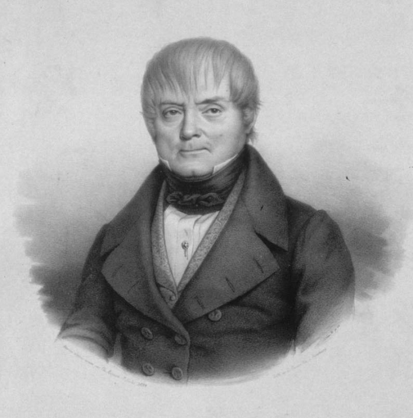

Шпионство при Наполеоне. Карл Шульмейстер
Перевел с французского генерального штаба Полковник В.Клембовский, 1897 г.
1 Вступление
Карл Шульмейстер (1770-1853)

Человеческий ум чувствует склонность к контрастам, и это сказывается, между прочим, в том, что каждый продолжительный период мира влечет за собою подъем воинственного духа. Двадцать пять лет спустя после Ватерлоо останки Наполеона I торжественно переносятся с острова Св.Елены в дом Инвалидов. Седан и крушение второй империи навсегда, казалось, уничтожили обаяние рода Бонапартов; но вот появляются мемуары генерала Марбо и тотчас возникает увлечение императорскою эпопеею, а маршалы — сподвижники Наполеона прославляются чуть не наравне с ним. История лишь выиграла от подобного возрождение прежней популярности: явились новые документальные данные, многие факты получили правдивое освещение, а деятельность многих сил — более правильную оценку.
Однако ни в одном из новейших исследований мы не встречали имени человека, который, по свидетельству современных ему биографов и историков, уже с 1805 года приобрел большую известность и играл немаловажную роль в войне третьей коалиции. Этот человек — Карл Шульмейстер, знаменитый шпион Наполеона I.
Такое умалчивание объясняется отчасти тем, что шпионств не принадлежит к числу правильно организованных средств разведывания, отчасти же тем, что, практикуемое в большинстве случаев людьми сомнительной нравственности и с корыстолюбивою целью, оно противно открытому и честному характеру французской нации.
И тем не менее судебные дела о шпионстве волнуют общественное мнение всех цивилизованных стран. Если человек молодой, сильный, блондин, с биноклем в руках, изберет местом своих прогулок какой-либо укрепленный район во Франции, он сильно рискует быть задержанным прохожими в качестве шпиона. Если незнакомец, брюнет коренастого сложения, займется фотографированием местности в Германии, его ожидает та же участь.
Но напрасно публика принимает так близко к сердцу подобные факты: шпионство, практикуемое теперь в мирное время, почти безвредно. В период французской революции и в первые годы империи военная география Европы была очень мало разработана: армии нуждались в хороших шпионах, хотя бы для заблаговременного ознакомления с дорогами. Теперь же топография не имеет секретов: железные, шоссейные, большие и малые грунтовые дороги, реки, каналы — все это указано на прекрасных картах, которые всякий может приобрести; едва кончится возведение какого-нибудь форта, как он уже наносится на план; во французском Indicafeur Chaix отмечены все пути и линии, важные в коммерческом и стратегическом отношениях; немецкий Hendschel дает те же сведения относительно Германии.
В былые времена главнокомандующие армиями нуждались также в шпионах для получения сведений о производительности, богатстве неприятельского края и о численности соседних армий. Ныне статистика дает все нужные цифры: в Statistisches Jahrbuch fur das deutche Reich ежегодно помещаются данные о составе и распределении всех армейских корпусов; во Франции официальные документы столь же ясно обрисовывают положение дел. Стало быть в мирное время шпионство может иметь только две цели: или получение подробностей о постройке фортов, для чего нужен специалист, или присвоение мобилизационного плана. Последнее возможно только при условии подкупа чиновника или офицера, и вот почему закон так строго карает подобные преступления, составляющие государственную измену.
В военное время шпионство, как нам кажется, будет играть важную роль. Безусловно необходимо иметь сведения о положении неприятеля, о его силах и даже о его намерениях. Бесспорно, что эта задача должна быть выполнена кавалерией: но последняя может потерять соприкосновение с противником, как это случилось после Верта с немецкой армией, не знавшей о направлении движения Маг-Магона. Вообще в 1870 году сведения, получавшиеся немцами из побочных источников принесли им большую пользу. О сосредоточении армии Маг-Магона у Реймса и о предполагавшемся движении ее на соединение с Базеном главная немецкая квартира узнала из телеграммы посланной из Лондона. Таким же косвенным путем получено было немцами известие о движении французов для деблокады Бельфора. Следовательно, шпионы необходимы и не только на театре военных действий, но и во всей неприятельской стране. Очень часто подкуп неприятельского офицера дает громадные результаты. “Если штабной офицер подкуплен за миллион, то это не дорого”,— говорил принц де Линь.
Наполеон I прекрасно организовал шпионство и возложил высшее руководство им на генерала Савари, которому был подчинен и содействовал Шульмейстер. Он тратил громадные суммы и охотно прибегал к подкупу штабных офицеров, что не представляло особенных затруднений в ту эпоху, когда офицеры часто переходили на службу из одной армии в другую. Ниже упомянуто о нескольких австрийских офицерах, подкупленных Шульмейстером.
Самым громким делом Шульмейстера была капитуляция Макка. В течение нескольких лет после сдачи Ульма Шульмейстер считался одним из полезнейших сотрудников Наполеона; его открыто обвиняли в том, что, будучи взят Макком в качестве шпиона, он обманул австрийского главнокомандующего и много способствовал капитуляции Ульма. Это участие Шульмейстера в одном из важнейших событий первой Империи возбуждает особый интерес к основательному знакомству с деятельностью того человека, которого многие немецкие писатели называют “злым гением Макка”.